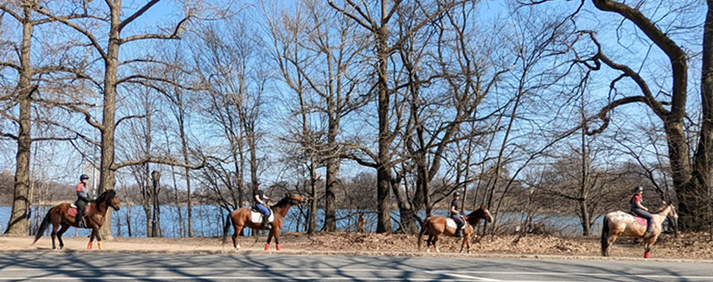

Brooklyn community
We build community through equine heritage, youth mentoring, intergenerational programming and accessible public programming in Prospect Park.
Horsemanship. Heritage. Community. A unique team experience in Brooklyn’s Prospect Park.
A hands-on immersive equine experience that ignites connection — with the horse, with each other and with New York’s living equestrian heritage.

Helping Hoof Initiative (hhi™) is a Brooklyn-based 501(c)(3) nonprofit dedicated to connecting people and horses through education, community and preservation of Prospect Park’s historic equestrian landscape.
We build community through equine heritage, youth mentoring, intergenerational programming and accessible public programming in Prospect Park.
We honor New York’s equestrian history and Prospect Park’s historic equine infrastructure, bringing that heritage back into public life.
We use historic equestrian spaces as a platform for connection, learning, wellness and stewardship.
A hands-on team building program designed for curiosity, connection and confidence — no riding experience necessary.
Introduction to hhi™, our horses and the park’s rich equestrian history.
Learn how we care for the horses and prepare them for work.
Everyone helps groom and tack the horses.
Two engaging, simultaneous programs:
Groups switch so everyone experiences both the trail & groundwork.
Remove tack, groom and care for the horses after work.
Q&A and your team’s hhi™ impact.
A portion of every equine experience directly supports our community programs, helping more New Yorkers — youth, seniors and families — access the transformative connection between horses, people and park.
Experience. Learn. Give back.
Contact us for per-person pricing
Minimum group: 8 people | Maximum: 14 people
A team experience with purpose